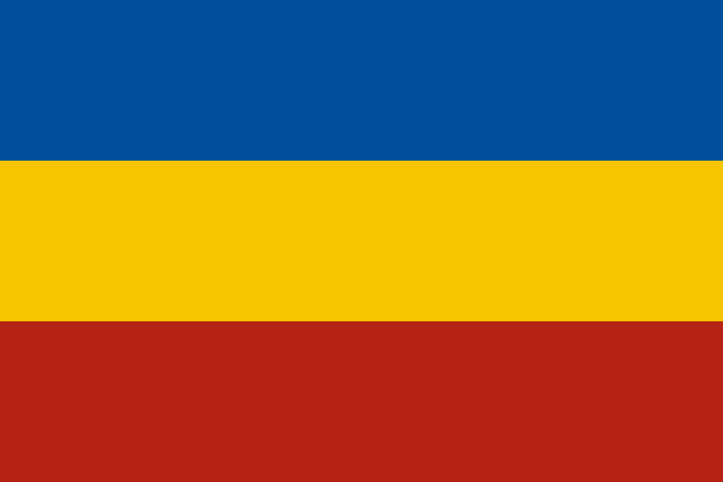
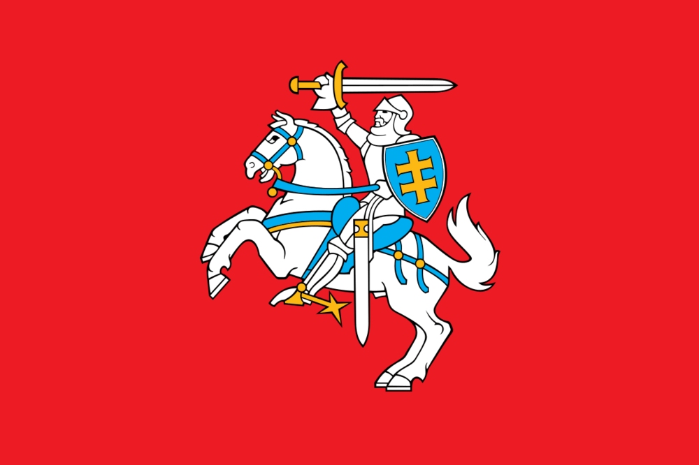

傀儡国
原页面：Puppet
傀儡国是指一个或多或少受另一个往往更强大的国家控制的国家，其政府由控制国安插，并效忠于控制国。
当一国被傀儡化时，其政府会被宗主国安插的政府取代，并遵奉宗主国的意识形态。如果宗主国宣战，它可以召集其傀儡国作为盟友参战。在战争胜利后举行的和平会议中，被傀儡化的国家无法自行提出要求（自治度较高的傀儡国除外，例如自治领和卫星国），但宗主国若愿意，可以为其傀儡国主张要求。因此，已被傀儡化的国家不能再傀儡化其他国家。
如果宗主国被迫投降，而其傀儡国并未与尚未投降的主要国家同处一个阵营，这些傀儡国也会自动投降。如果宗主国投降，但傀儡国所在阵营中仍有主要国家，该傀儡国将获得自治度点数。击败宗主国（以及与其同阵营的其他主要国家）后，战胜国可以选择把被傀儡化的国家从宗主国手中剥离，使其重新成为独立国家。共产主义国家傀儡化其他国家时可获得 35% 的费用减免。
作为宗主国
拥有傀儡国的优势
- 宗主国可以以低于标准贸易率的折扣价从其傀儡国或附属国进口货物，每座工厂最多可达 8 单位资源量。例如，傀儡国或整合傀儡国（如马来亚）每座工厂向其英国宗主国提供 80 单位（90% 折扣），而殖民地（英属印度）每座工厂提供 16 单位（50% 折扣），英国各自治领每座工厂提供 10 单位（25% 折扣）。
- 宗主国通过傀儡国所能获取的资源，远多于直接吞并时仅靠自身贸易法令所能获取的数量。对宗主国的额外贸易会在傀儡国贸易法令的基础上按市场价提供加成。因此，如果某傀儡国有 200
 钢铁可用，且实行
钢铁可用，且实行 自由贸易，通常只有 80% 的资源用于出口（160 钢铁），其余可留作自用。再加上 +25% 的额外贸易加成（来自自治领级自治度），傀儡国可供出口的钢铁总量就达到 170（160 + 10，其中 10 是 25%（占 40），而 40 等于 200 - 160），而其总量为 200。这意味着对于整合傀儡国，宗主国即使对方改用
自由贸易，通常只有 80% 的资源用于出口（160 钢铁），其余可留作自用。再加上 +25% 的额外贸易加成（来自自治领级自治度），傀儡国可供出口的钢铁总量就达到 170（160 + 10，其中 10 是 25%（占 40），而 40 等于 200 - 160），而其总量为 200。这意味着对于整合傀儡国，宗主国即使对方改用 封闭经济，也能买下其全部资源。对宗主国的额外贸易适用于未出口的那部分资源。
封闭经济，也能买下其全部资源。对宗主国的额外贸易适用于未出口的那部分资源。 - 整合傀儡国、帝国专员辖区/帝国保护国以及帝国准成员/保护国会把其民用工厂（含炼油厂）的一小部分和军用工厂的大部分交给宗主国。海军船坞不受影响。详情参见图表。
- 在特定自治度等级下，宗主国可以申请许可生产傀儡国的装备，可享受折扣甚至完全免费。除了无需研究即可获得该装备的使用权外，在许可有效期内研究该装备还会获得加成，从而加快本国装备的研究进度。
- 玩家可以“请求”获得对傀儡国军队的控制权；这能为宗主国提供额外的师，不过傀儡国的师可能编制不佳。
- 这样做时，玩家最好向傀儡国租借合适的装备，这既能加快其师编制训练，也能弥补傀儡国现有的装备短缺。或者，宗主国也可以向傀儡国索取租借装备，以抽干其装备储备。
- 傀儡国仍可从宗主国以外的国家获得租借——而且傀儡国很可能会向其他国家索要装备，因为它通常装备短缺，且往往几乎没有工业。随后，宗主国可以向傀儡国索要租借装备，抽干傀儡国的库存。傀儡国与宗主国拥有各自独立的租借冷却时间。因此，宗主国可以利用傀儡国向其他阵营讨要装备。
- 宗主国可以通过组建混合使用宗主国与傀儡国人力的部队来有效提升自身人力（殖民地 70%、傀儡国 90%、整合傀儡国 100%）。此类殖民地师由宗主国控制。这些殖民地师的编制取自或改编自傀儡国自身的编制列表（点击招募/部署菜单中师编制设计器顶部的皇冠图标即可打开）。如果傀儡国是刚被释放的，它将获得宗主国的编制。
- 傀儡国可以派遣驻军支援，以节省人力。
- 傀儡国无需驻军——这样可以节省人力和武器。
- 傀儡化其他国家往往比吞并它们更安全，因为它产生的世界紧张度低于领土吞并，从而降低其他潜在敌对国家进行外国干预的风险。

- 傀儡化可以让国家保留其舰队。由于主力舰建造耗时很长，这能极大地帮助夺取制海权。
- 共产主义国家在和平会议中可以以 10% 的折扣傀儡化战败国，从而在战后把更多领土置于其（间接）控制之下。
- 某些傀儡国自治度等级会把其部分战争贡献转交给宗主国。
- 在“抵抗运动”DLC 中，卫星国、自治领、帝国臣民和受监管国可以向特工大师提供特工。

- 傀儡国可以研究与其宗主国不同的科技。之后，宗主国与傀儡国可以互相共享研究成果，通过科技共享与装备许可生产。
- 宗主国的师若位于傀儡国领土上，可以从傀儡国的后勤网络获得补给。如果宗主国装备不足的师驻扎在傀儡国领土上，就能以牺牲傀儡国为代价来武装这些师，而这不会提高傀儡国的自治度。同样，如果傀儡国的师进入宗主国领土，宗主国的部分装备也可能落入傀儡国师的手中。
- 还存在一个奇怪的「不存在的傀儡国」或「虚拟傀儡国」bug。若你释放一个傀儡国，而其当前控制的所有州都是你的核心州（例如意大利的教宗国、法国的奥克西塔尼亚），在保留核心州的同时，傀儡国在技术上已被释放，但没有获得任何州。这导致傀儡国只「存在于纸面上」，在地图上没有实体表现；以至于要在国家列表中快速双击才能选中它。这类不存在的傀儡国确实会带来少量好处，因为它们会自行研究，但会让界面变得杂乱。
- 也可以通过残余国家傀儡国来抽干武器。在征服一个国家时——最好是武器很多的国家——在和平会议中吞并该国除最无价值的一个州以外的所有州，并把被征服国变为傀儡国，只给它留下那一个州。然后，命令傀儡国通过租借把装备交给你——从而获得该国投降时你未能得到的那另一半军火库。最终在很久之后，这个残余国家会重新独立，届时可以再次征服它，或者干脆置之不理。
一方面，如果你更早释放傀儡国，它就有更多时间完成国策树、建造建筑、组建师并向他人讨要租借。另一方面，新释放的傀儡国会获得宗主国的编制——所以，如果你打算把傀儡国用于战争（无论是殖民地师，还是你“请求”控制权的傀儡国师），就应当考虑在释放傀儡国前制定好所有必需的、可随时投入战斗的编制。此外，许多傀儡国的科研槽比其宗主国少——因此若释放得更早，长期来看它们的科技会更落后（这不是大问题）。
拥有傀儡国的劣势
- 把资源很少的小国变成傀儡，效率不如直接吞并该国，尤其是在傀儡国拥有少于 8 但多于 0 单位该资源时，因为工厂仍然需要支付代价。
- 如果潜在傀儡国是被征服的，可以通过资源权利要求大大推迟这一问题。
- 如果你给傀儡国太多土地，它可能会拒绝把土地还给你。
作为傀儡国
作为傀儡国的优势
- 傀儡国可以接收来自宗主国的租借，即使在和平时期也是如此。在 1936 年开局的多人游戏中，这有助于让傀儡国取得先发优势。
- 傀儡国通常可以在比正常情况更低的世界紧张度水平下接收来自宗主国的租借。
- 如果一国向某傀儡国宣战，其宗主国会自动对该宣战国转为敌对并加入战争，把本国以及所有其他傀儡国都卷入战斗。
作为傀儡国的劣势
- 傀儡国因向宗主国提供资源而获得较少的工厂。这会阻碍游戏前期的工业发展。
- 傀儡国既不能制造战争目标，也不能向其他国家宣战；除此之外，傀儡国无法在和平会议中提出要求，这意味着傀儡国的领土扩张完全由宗主国决定。
- 如果宗主国向某国宣战，它可以随意迫使傀儡国参战（帝国臣民可以拒绝参战）。如果对手更强大而自己又孤军作战，胜算显然不利。即使傀儡国证明更强并击败了敌人，除非宗主国在和会中或之后给予补偿，它从这场战争中除荣耀（以及自治度点数）外一无所获。
- 傀儡国必须处理自治度问题，否则就要承受对宗主国更有利的进一步劣势，最坏情况下会被宗主国直接吞并。提高自治度最快、最可靠的方法之一是使用持续国策，但这会浪费本可用于完成其他国策的时间。傀儡国也可以通过向宗主国贸易或租借货物来获得自治度。不过，拥有独特国策树的傀儡国通常有一个比上述方法更快的国策。
自治度系统
备注：图标可点击。
自治度等级
有些傀儡国比其他傀儡国更独立。为了体现高度自治的自治领（如加拿大）、部分自治的殖民地（如英属印度）和完全听命的傀儡国（如马来亚）之间的差异，游戏把附属国划分为四个自治度等级。在每个等级内， 自治度都有一个 0 到 1000 的数值。
自治度都有一个 0 到 1000 的数值。
在 1000  自治度 时，附属国可以晋升到更高一级；如果它已经是
自治度 时，附属国可以晋升到更高一级；如果它已经是 自治领，则可以获得自由。当自治度降到 0 时，宗主国可以把自治度降到更低一级；如果它已经是
自治领，则可以获得自由。当自治度降到 0 时，宗主国可以把自治度降到更低一级；如果它已经是 整合傀儡国，则可以把傀儡国完全吞并。变更等级需要 50
整合傀儡国，则可以把傀儡国完全吞并。变更等级需要 50  政治点数，吞并一个附属国需要 300
政治点数，吞并一个附属国需要 300  政治点数，获得自由需要 300
政治点数，获得自由需要 300  政治点数。[1]
政治点数。[1]
| 自治度等级 | 规则 | 修正项 | 自治度花费 |
|---|---|---|---|
| 独立 |
|
不再是傀儡国！ | |
| 自治领 |
|
|
|
| 殖民地 |
|
|
|
| 傀儡国 |
|
|
|
| 整合傀儡国 |
|
|
自治度等级（法西斯主义）
 法西斯主义国家对其附属国使用一套略有不同的系统。虽然自治度等级更少（只有 3 级），但要挣脱（或降到最低以吞并）所需增加的
法西斯主义国家对其附属国使用一套略有不同的系统。虽然自治度等级更少（只有 3 级），但要挣脱（或降到最低以吞并）所需增加的 自治度总量相同，因为现在每个等级的自治度数值都按 0 到 1500 分级，
自治度总量相同，因为现在每个等级的自治度数值都按 0 到 1500 分级， 卫星国除外。
卫星国除外。 政治点数花费不变：变更等级需要 50
政治点数花费不变：变更等级需要 50  政治点数，吞并一个附属国需要 300
政治点数，吞并一个附属国需要 300  政治点数，获得自由需要 300
政治点数，获得自由需要 300  政治点数。[1]
政治点数。[1]
| 自治度等级 | 规则 | 修正项 | 自治度花费 |
|---|---|---|---|
| 独立 |
|
不再是傀儡国！ | |
| 卫星国 |
|
|
|
| 帝国保护国 |
|
|
|
| 帝国专员辖区 |
|
|
|
自治度等级（大日本帝国）
 日本和满洲国
日本和满洲国 使用另一套系统。它们只有 2 个基础自治度等级，另有第三个替代等级，专属于满洲国（帝国臣民），即
使用另一套系统。它们只有 2 个基础自治度等级，另有第三个替代等级，专属于满洲国（帝国臣民），即 日本的一种附属国。此外，帝国准成员等级要求附属国为法西斯主义
日本的一种附属国。此外，帝国准成员等级要求附属国为法西斯主义 或中立主义，而另外两个等级（皇家保护国和帝国臣民）则要求宗主国为
或中立主义，而另外两个等级（皇家保护国和帝国臣民）则要求宗主国为 法西斯主义或
法西斯主义或 中立主义。
中立主义。

从皇家保护国升到帝国准成员需要 2500  自治度，而从帝国准成员走向自由需要 1500
自治度，而从帝国准成员走向自由需要 1500  自治度。
自治度。
 政治点数花费不变：变更等级需要 50
政治点数花费不变：变更等级需要 50  政治点数，吞并一个附属国需要 300
政治点数，吞并一个附属国需要 300  政治点数，获得自由需要 300
政治点数，获得自由需要 300  政治点数。[1]
政治点数。[1]
帝国臣民等级上限为 1000自治度 ，且不允许获得自由。满洲国
，且不允许获得自由。满洲国 只能通过国策获得自由。此外，满洲国只有在完成「加强协和会」或「服从」之后，才能将自治等级从
只能通过国策获得自由。此外，满洲国只有在完成「加强协和会」或「服从」之后，才能将自治等级从 皇家保护国提升到帝国准成员。要获得帝国臣民等级，满洲国
皇家保护国提升到帝国准成员。要获得帝国臣民等级，满洲国 可以完成国策「自信」以立即成为该等级，或在完成「两位皇帝」或「索取外满洲」后手动成为该等级。
可以完成国策「自信」以立即成为该等级，或在完成「两位皇帝」或「索取外满洲」后手动成为该等级。


| 自治度等级 | 规则 | 修正项 | 自治度花费 |
|---|---|---|---|
| 独立 |
|
不再是傀儡国！ | |
| 帝国臣民 |
|
|
|
| 帝国准成员 |
|
|
|
| 皇家保护国 |
|
|
|
受监管国（民主主义）
受监管国这一附属国类型由 民主主义国家所创建阵营中的国家在和会上设立。该附属国类型会在附属国内提升宗主国的意识形态，并禁止任命任何可能改变该国意识形态构成的政府部长。宗主国不能吞并该附属国，而附属国会随时间获得更多自治度，最终得以脱离宗主国获得自由。请注意，
民主主义国家所创建阵营中的国家在和会上设立。该附属国类型会在附属国内提升宗主国的意识形态，并禁止任命任何可能改变该国意识形态构成的政府部长。宗主国不能吞并该附属国，而附属国会随时间获得更多自治度，最终得以脱离宗主国获得自由。请注意， 民主主义国家仍可通过在和会上吞并战败国并将其作为傀儡国释放来获得普通傀儡国。
民主主义国家仍可通过在和会上吞并战败国并将其作为傀儡国释放来获得普通傀儡国。
| 自治度等级 | 规则 | 修正项 | 自治度花费 |
|---|---|---|---|
| 独立 |
|
不再是傀儡国！ | |
| 受监管国 |
|
|
|
合作政府
 法西斯主义、
法西斯主义、 共产主义和
共产主义和 中立主义国家可以组建合作政府。如果某一核心在全部被占领州的平均当地合作度升至 80%，占领国将有机会扶植一个由忠诚且同情的当地平民组成的合作政府，来管理和治理被占领土。
中立主义国家可以组建合作政府。如果某一核心在全部被占领州的平均当地合作度升至 80%，占领国将有机会扶植一个由忠诚且同情的当地平民组成的合作政府，来管理和治理被占领土。
创建时，该自治度等级位于 整合傀儡国 /
整合傀儡国 /  帝国专员辖区 / 皇家保护国（取决于宗主国能创建何种附属国）与
帝国专员辖区 / 皇家保护国（取决于宗主国能创建何种附属国）与 已吞并之间。
已吞并之间。
AI 不会提高也不会降低其自治度等级。
| 自治度等级 | 规则 | 修正项 | 自治度花费 |
|---|---|---|---|
| 合作政府 |
|
|
|
共主邦联
君合国是一种独特的附属国类型，目前只有 波兰、中立主义
波兰、中立主义 德国和立陶宛
德国和立陶宛 可以通过各自的国策树获得。它们是一次性创建的，一旦失去该附属国就无法重新获得。君合国不能被吞并；此外，如果它们提高自治度，就会挣脱独立。
可以通过各自的国策树获得。它们是一次性创建的，一旦失去该附属国就无法重新获得。君合国不能被吞并；此外，如果它们提高自治度，就会挣脱独立。
 波兰可以创建以下共主邦联：
波兰可以创建以下共主邦联：
 德国可以创建以下君合国：
德国可以创建以下君合国：
- 完成「建立西部大公国」后：
 威尔士：通过决议“建立大威尔士国”
威尔士：通过决议“建立大威尔士国” 苏格兰：通过决议“建立大苏格兰国”
苏格兰：通过决议“建立大苏格兰国” 布列塔尼：通过决议“建立大布列塔尼国”
布列塔尼：通过决议“建立大布列塔尼国” 比利时：通过决议“建立大佛兰德斯”
比利时：通过决议“建立大佛兰德斯”
- 完成「建立东部大公国」后：

 波罗的海联合公国：通过决议“建立波罗的海德意志国家”
波罗的海联合公国：通过决议“建立波罗的海德意志国家” 乌克兰：通过决议“恢复乌克兰国”
乌克兰：通过决议“恢复乌克兰国” 白俄罗斯：通过决议“建立白俄罗斯国”
白俄罗斯：通过决议“建立白俄罗斯国” 格鲁吉亚：通过决议“建立外高加索卫星国”
格鲁吉亚：通过决议“建立外高加索卫星国”
 立陶宛可以创建以下共主邦联：
立陶宛可以创建以下共主邦联：
 波兰：通过国策“波兰王国”。
波兰：通过国策“波兰王国”。
| 自治度等级 | 规则 | 修正项 | 自治度花费 |
|---|---|---|---|
| 共主邦联 |
|
|
|
北欧防务委员会成员
“北欧防务委员会成员”自治度等级仅适用于 瑞典。此外，只有丹麦
瑞典。此外，只有丹麦 、冰岛、
、冰岛、 芬兰和挪威
芬兰和挪威 这些国家才能成为该附属国。
这些国家才能成为该附属国。
如果 瑞典成为这些国家中任何一个的宗主国，它可以手动把它们的自治度降低到“北欧防御理事会成员”，即使它们并非通过“北欧防御理事会”国策获得。不过这也意味着，瑞典永远无法通过外交吞并另一个北欧国家。
瑞典成为这些国家中任何一个的宗主国，它可以手动把它们的自治度降低到“北欧防御理事会成员”，即使它们并非通过“北欧防御理事会”国策获得。不过这也意味着，瑞典永远无法通过外交吞并另一个北欧国家。
这些附属国还会把国名改为 南部威慑区、冰岛防御区
南部威慑区、冰岛防御区 、芬兰北欧堡垒和
、芬兰北欧堡垒和 挪威大西洋壁垒。
挪威大西洋壁垒。
| 自治度等级 | 规则 | 修正项 | 自治度花费 |
|---|---|---|---|
| 北欧防务委员会成员 |
|
|
|
奥匈附庸
“奥匈附庸”自治度等级仅适用于：
 奥地利（在采取国策“要求匈牙利臣服”或“让匈牙利重回怀抱”之后）
奥地利（在采取国策“要求匈牙利臣服”或“让匈牙利重回怀抱”之后）
 匈牙利（在采取国策“圣斯蒂芬王冠之地”之后）。
匈牙利（在采取国策“圣斯蒂芬王冠之地”之后）。
此外，它只适用于某些附属国。它们是：匈牙利、奥地利、 阿尔巴尼亚、捷克斯洛伐克
阿尔巴尼亚、捷克斯洛伐克 、南斯拉夫、
、南斯拉夫、 罗马尼亚、波兰
罗马尼亚、波兰 、波斯尼亚、克罗地亚、黑塞哥维那、伦巴底-威尼西亚、黑山、西里西亚、斯洛文尼亚、斯洛伐克和特兰西瓦尼亚。
、波斯尼亚、克罗地亚、黑塞哥维那、伦巴底-威尼西亚、黑山、西里西亚、斯洛文尼亚、斯洛伐克和特兰西瓦尼亚。


该附属国类型位于常规自治度系统之内，介于 整合傀儡国和
整合傀儡国和 傀儡国之间。吞并一个
傀儡国之间。吞并一个 整合傀儡国的自治度花费降至仅 125，使吞并变得相当迅速。
整合傀儡国的自治度花费降至仅 125，使吞并变得相当迅速。
它还有一些游戏中未明确说明的特殊之处：拥有该附属国类型的 AI 国家即使有足够的政治点数，也绝不会把自己的自治度等级提升到 傀儡国，但如果被降到
傀儡国，但如果被降到 整合傀儡国，则会将其升回该等级。
整合傀儡国，则会将其升回该等级。
| 自治度等级 | 规则 | 修正项 | 自治度花费 |
|---|---|---|---|
| 奥匈附庸 |
|
|
|
欧盟成员国
“欧盟成员国自治”等级仅适用于：
此外，它只适用于某些附属国。它们是：德国、意大利、 奥地利、比利时
奥地利、比利时 、希腊、
、希腊、 丹麦、爱尔兰
丹麦、爱尔兰 、葡萄牙、
、葡萄牙、 西班牙、瑞典
西班牙、瑞典 、芬兰、
、芬兰、 捷克斯洛伐克、波兰
捷克斯洛伐克、波兰 、匈牙利、
、匈牙利、 罗马尼亚、爱沙尼亚
罗马尼亚、爱沙尼亚 、拉脱维亚、
、拉脱维亚、 立陶宛、保加利亚
立陶宛、保加利亚 、斯洛文尼亚、克罗地亚、法国、
、斯洛文尼亚、克罗地亚、法国、 英国、卢森堡
英国、卢森堡 、荷兰、威尔士和苏格兰。
、荷兰、威尔士和苏格兰。


该附属国类型将位于常规自治度系统之内，介于 已吞并和
已吞并和 整合傀儡国之间。
整合傀儡国之间。
| 自治度等级 | 规则 | 修正项 | 自治度花费 |
|---|---|---|---|
| 欧盟成员国 |
|
|
|
人民委员辖区
“人民委员区”自治度等级只对已完成国策“建立人民委员区”的 共产主义德国开放
共产主义德国开放
在常规自治度系统内，它将介于 整合傀儡国和
整合傀儡国和 傀儡国之间，而
傀儡国之间，而 整合傀儡国的自治度花费将变为 125。
整合傀儡国的自治度花费将变为 125。
| 自治度等级 | 规则 | 修正项 | 自治度花费 |
|---|---|---|---|
| 人民委员辖区 |
|
|
|
军阀附庸
“军阀附庸”和“整合军阀附庸”等级仅适用于：
此外，它只适用于某些附属国，包括：
这两个附属国等级与自治度系统的互动方式非常特殊。首先，它们在 中国中的运作方式如下：对于中立主义中国，它们取代所有其他自治度等级，因而位于
中国中的运作方式如下：对于中立主义中国，它们取代所有其他自治度等级，因而位于 已吞并和
已吞并和 免费之间。其他任何意识形态的中国都会在军阀附庸
免费之间。其他任何意识形态的中国都会在军阀附庸 之上增加一个附属国等级：自治领
之上增加一个附属国等级：自治领 自治领，适用于民主主义 / 共产主义
自治领，适用于民主主义 / 共产主义 中国，而
中国，而 卫星国则适用于
卫星国则适用于 法西斯中国
法西斯中国 。
。


对于所有其他国家，情况要复杂一些：首先，“整合军阀附庸”等级通常不可用，但在宗主国为法西斯的某些情况下可以获得。对于其他所有意识形态，“军阀附庸”会被置于“ 殖民地
殖民地 ”和“自治领”之间。对于法西斯
”和“自治领”之间。对于法西斯 国家，它会被置于“
国家，它会被置于“ 帝国保护国”和“
帝国保护国”和“ 卫星国”之间。此外，一旦附属国达到“军阀附庸”，此前的等级就会变为“整合军阀附庸”（即使它们此前是帝国保护国）。从“整合军阀附庸”出发，它们还可以再次变为“
卫星国”之间。此外，一旦附属国达到“军阀附庸”，此前的等级就会变为“整合军阀附庸”（即使它们此前是帝国保护国）。从“整合军阀附庸”出发，它们还可以再次变为“ 帝国保护国”。
帝国保护国”。


| 自治度等级 | 规则 | 修正项 | 自治度花费 |
|---|---|---|---|
| 军阀附庸 |
|
|
|
| 已整合 军阀附庸 |
|
|
|
附属自治领
“联系自治领”自治度等级只对作为英国附属国且已完成国策 澳大利亚或（无法识别的国策 id “the ultimate overseas duty”，tag “ast”，用于 Template:Focus）
澳大利亚或（无法识别的国策 id “the ultimate overseas duty”，tag “ast”，用于 Template:Focus） 的（无法识别的国策 id “done meddling”，tag “ast”，用于 Template:Focus）开放
的（无法识别的国策 id “done meddling”，tag “ast”，用于 Template:Focus）开放
| 自治度等级 | 规则 | 修正项 | 自治度花费 |
|---|---|---|---|
| 附属自治领 File:Autonomy Associated Dominion.png |
|
|
|
印度尼西亚联合邦
“印度尼西亚联合邦”自治度等级只对 荷属东印度开放。此外，只有亚齐达鲁萨兰王国、巴厘王国、戈瓦苏丹国、锡亚克·斯里·英德拉普拉苏丹国、坤甸卡德里亚苏丹国和特尔纳特苏丹国这些可释放国家能成为此类附属国。
荷属东印度开放。此外，只有亚齐达鲁萨兰王国、巴厘王国、戈瓦苏丹国、锡亚克·斯里·英德拉普拉苏丹国、坤甸卡德里亚苏丹国和特尔纳特苏丹国这些可释放国家能成为此类附属国。


如果 荷属东印度成为其中任何一个国家的宗主国，它可以手动降低它们的自治度等级，使其成为“印度尼西亚联合邦”。这意味着荷属东印度
荷属东印度成为其中任何一个国家的宗主国，它可以手动降低它们的自治度等级，使其成为“印度尼西亚联合邦”。这意味着荷属东印度 永远无法通过外交吞并另一个印度尼西亚国家。
永远无法通过外交吞并另一个印度尼西亚国家。
| 自治度等级 | 规则 | 修正项 | 自治度花费 |
|---|---|---|---|
| 印度尼西亚联合邦 |
|
|
|
改变自治度
宗主国和附属国的行动都可以改变自治度。一般而言，附属国帮助宗主国会提高其自治度，而宗主国帮助附属国则会降低其自治度。
- 宗主国向附属国租借装备时，每转让 100生产花费装备，自治度降低 1 点。
 [2]例如，给予 1000 单位步兵装备 I（单位成本 0.5），自治度将降低 (1000 * 0.5 / 100) = 5 点。该装备必须至少与附属国凭自身科技所能生产的最好同类装备相当（或更好），且不能是外国制造（既非租借而来，也非缴获）。因此倾销过时装备不会产生任何效果（宗主国向傀儡国租借过时装备可能会降低傀儡国的自治度。这一宗主国对傀儡国的效果尚待确认。在 Bug 报告论坛的一则帖子中，英国向英属印度租借了 10000 单位基础步兵装备，使印度的自治度下降了 30）。
[2]例如，给予 1000 单位步兵装备 I（单位成本 0.5），自治度将降低 (1000 * 0.5 / 100) = 5 点。该装备必须至少与附属国凭自身科技所能生产的最好同类装备相当（或更好），且不能是外国制造（既非租借而来，也非缴获）。因此倾销过时装备不会产生任何效果（宗主国向傀儡国租借过时装备可能会降低傀儡国的自治度。这一宗主国对傀儡国的效果尚待确认。在 Bug 报告论坛的一则帖子中，英国向英属印度租借了 10000 单位基础步兵装备，使印度的自治度下降了 30）。 - 附属国向宗主国租借装备时，每转移 100 点生产花费的装备会使其自治度提高 1。[3] 装备必须至少与宗主国能生产的最好装备相当（或更好），因此把过时装备倾销给宗主国并不会削弱宗主国对该傀儡国的控制。
- 宗主国在附属国中进行任何建造都会使该附属国的自治度降低 0.7（每投入 100 点工业产能）。[4] 例如，建造一座
 军用工厂，其成本为 7200 单位，会使自治度降低 (7200 * 0.7 / 100) = 50.4。注意，某些附属国类型会阻止宗主国在其境内建造（除非该附属国与其宗主国同属一个阵营，因为阵营成员总是可以在彼此领土上建造）。
军用工厂，其成本为 7200 单位，会使自治度降低 (7200 * 0.7 / 100) = 50.4。注意，某些附属国类型会阻止宗主国在其境内建造（除非该附属国与其宗主国同属一个阵营，因为阵营成员总是可以在彼此领土上建造）。 - 如果宗主国贸易某个附属国的部分资源，该附属国每出口一种资源每天获得 0.005 点[5]自治度。请注意，宗主国最终实际使用了多少这些资源并不重要，重要的是它通过贸易从傀儡国那里获得了多少。
- 附属国会因其对宗主国战争的贡献而获得自治度，大致相当于其产生的战争分数的 60%[6]。确切公式待定
- 持续国策
 镇压附属国会使所有附属国的自治度每天降低 0.5，而国策
镇压附属国会使所有附属国的自治度每天降低 0.5，而国策 提高自治度会使采取该国的附属国自治度每天提高 0.5。如果两个国策同时生效，它们会互相抵消。
提高自治度会使采取该国的附属国自治度每天提高 0.5。如果两个国策同时生效，它们会互相抵消。 - 若干国家专属国策和国家精神会提高或降低自治度——目前仅限于
 英国、英联邦国家、荷兰
英国、英联邦国家、荷兰 、意大利和
、意大利和 满洲国。
满洲国。
- 如果宗主国（向任何一方）投降，其所有属国立即获得相当于其晋升到下一等级所需自治度总量的 50%[7] 的自治度。这一数值通常是 500 自治度。
- 对于傀儡国等级较少、但各等级自治度区间大得多的
 法西斯宗主国，如果它们投降，其附属国可能获得多得多的自治度。
法西斯宗主国，如果它们投降，其附属国可能获得多得多的自治度。
- 对于傀儡国等级较少、但各等级自治度区间大得多的
- 宗主国向自己的傀儡国派遣武官每天降低 0.05 点自治度，[8]而傀儡国向宗主国派遣武官每天产生 0.05 点自治度。[9]
获得独立
傀儡国是有可能挣脱其宗主国的。但如果玩家希望迅速达成，就无法通过和平方式实现。一种可行的方法是为与当前政府不同的意识形态提供更多支持，利用政治顾问并引发内战，以此从现有权力结构中解放自己。
敌对行动一旦开始，新独立的政府将与原傀儡国政府陷入武装冲突，而后者可能仍会向宗主国寻求援助。这场独立斗争的结局取决于叛军能否同时压倒宗主国与效忠派。若傀儡国成功，它将有机会接管其原宗主国。
实现独立的另一种方式是使自治度提升到足够程度。可以通过租借计划向宗主国提供任何类型的装备来实现。作为回应，宗主国可能会在其境内发起建设项目来削弱该国的自治度，或在获得同意的情况下提供贷款或其他形式的财政援助。可以得出结论：在启用《共赴胜利》策略的情况下，通过和平进程实现独立是可行的；不过这是一个漫长而复杂的过程。
傀儡国名称
大多数傀儡国与其独立时的国名相同，但有些国家在作为特定国家的特定类型附属国时会使用特殊名称：
- 英国的属国：
 美国:
美国:
- 北美自治领（自治领）
- 48/49/50/51 殖民地（殖民地）（数量取决于美国是否给予阿拉斯加、夏威夷和/或波多黎各州地位）
- 英属北美领地（傀儡国）
- 乔治王地（一体化傀儡国）
- 沃利斯王后地（一体化傀儡国，在爱德华国王治下）
 加拿大:
加拿大:
- 加拿大自治领（自治领）
- 加拿大联邦（殖民地）
- 加拿大省（傀儡国）
- 英属北美（一体化傀儡国）
 肯尼亚：
肯尼亚：- 肯尼亚自治领（自治领）
- 肯尼亚殖民地（殖民地）
- 英属肯尼亚（傀儡国）
- 英属东非（一体化傀儡国）
 津巴布韦：
津巴布韦：- 罗得西亚自治领（自治领）
- 罗得西亚殖民地（殖民地）
- 英属罗得西亚（傀儡国）
- 英属南非洲高级专员领地（一体化傀儡国）
 博茨瓦纳：
博茨瓦纳：- 博茨瓦纳自治领（自治领）
- 贝专纳殖民地（殖民地）
- 贝专纳保护国（傀儡国）
- 英属贝专纳（一体化傀儡国）
 墨西哥:
墨西哥:
- 墨西哥自治领（仅当墨西哥已完成「国有化油田」国策、且英国不是共产主义国家时，才通过和平会议获得）

- 墨西哥自治领（仅当墨西哥已完成「国有化油田」国策、且英国不是共产主义国家时，才通过和平会议获得）
 亚美尼亚共和国（「伟大理想」的结果）：
亚美尼亚共和国（「伟大理想」的结果）：- 亚美尼亚自治领（自治领）
- 亚美尼亚总督区（殖民地）
- 亚美尼亚保护国（傀儡国）
- 英属亚美尼亚（一体化傀儡国）
 奥克西塔尼亚（中立主义）
奥克西塔尼亚（中立主义）- 安茹阿基坦王国
 瑞士:
瑞士:
- 阿尔卑斯领地（民主制）
- 英属阿尔卑斯领地（法西斯）
 和田马家军:
和田马家军:
- 通古宁斯坦
 德国的属国：
德国的属国：- 乌克兰共和国：
- 大乌克兰帝国（自治领）
- 帝国领地乌克兰（卫星国/殖民地）
- 乌克兰帝国保护国（帝国保护国/法西斯傀儡国）
- 乌克兰（傀儡国）
- 乌克兰帝国专员区（帝国专员区/一体化傀儡国）
- 白俄罗斯：
- 白俄罗斯（卫星国/自治领/殖民地/傀儡国）
- 白俄罗斯帝国保护国（帝国保护国/法西斯傀儡国）（法西斯）
- 白俄罗斯帝国专员区（帝国专员区/一体化傀儡国）
- 荷兰:
- 迪茨兰（卫星国/自治领）（法西斯）
- 帝国领地尼德兰（殖民地）（法西斯）
- 尼德兰帝国保护国（帝国保护国/傀儡国）（法西斯）
- 尼德兰帝国专员区（帝国专员区/一体化傀儡国）（法西斯）
- 比利时:
- 佛兰德-瓦隆（卫星国/自治领）（法西斯）
- 帝国领地比利时（殖民地）（法西斯）
- 比利时帝国保护国（帝国保护国/傀儡国）（法西斯）
- 比利时帝国专员区（帝国专员区/一体化傀儡国）（法西斯）
- 格鲁吉亚：
- 高加索帝国专员区（法西斯）
 爱沙尼亚:
爱沙尼亚:
- 爱沙尼亚（卫星国/自治领）（法西斯）
- 帝国领地爱沙尼亚（殖民地）（法西斯）
- 爱沙尼亚帝国保护国（帝国保护国/傀儡国）（法西斯）
- 爱沙尼亚帝国专员区（帝国专员区/一体化傀儡国）（法西斯）
 立陶宛:
立陶宛:
- 立陶宛（卫星国/自治领）（法西斯）
- 帝国领地立陶宛（殖民地）（法西斯）
- 立陶宛帝国保护国（帝国保护国/傀儡国）（法西斯）
- 立陶宛帝国专员区（帝国专员区/一体化傀儡国）（法西斯）
 拉脱维亚:
拉脱维亚:
- 拉脱维亚（卫星国/自治领）（法西斯）
- 帝国领地拉脱维亚（殖民地）（法西斯）
- 拉脱维亚帝国保护国（帝国保护国/傀儡国）（法西斯）
- 拉脱维亚帝国专员区（帝国专员区/一体化傀儡国）（法西斯）
 挪威:
挪威:
- 帝国领地挪威（殖民地）（法西斯）
- 挪威帝国保护国（帝国保护国/傀儡国）（法西斯）
- 挪威帝国专员区（帝国专员区/一体化傀儡国）（法西斯）
 捷克斯洛伐克:
捷克斯洛伐克:
- 波希米亚-摩拉维亚帝国保护国（帝国保护国/傀儡国）（法西斯）
- 波兰:
- 总督府（帝国保护国）（法西斯）
- 总督府（傀儡国）（法西斯）（原文如此）
 法国:
法国:
- 维希法国（傀儡国/帝国保护国）（法西斯）
- 肯尼亚：
- 东非（卫星国/自治领）
- 东非帝国领地（殖民地）
- 东非帝国保护国（帝国保护国/傀儡国）
- 德意志东非（帝国专员区/一体化傀儡国）
- 津巴布韦：
- 中非（卫星国/自治领）
- 中非帝国领地（殖民地）
- 中非帝国保护国（帝国保护国/傀儡国）
- 德意志中非（帝国专员区/一体化傀儡国）
 利比亚：
利比亚：- 北非（卫星国/自治领）
- 北非帝国领地（殖民地）
- 北非帝国保护国（帝国保护国/傀儡国）
- 德意志北非（帝国专员区/一体化傀儡国）
 但泽自由市:
但泽自由市:
- 但泽帝国大区（法西斯）
 克里米亚：
克里米亚：- 陶里亚分区（法西斯）
 伏尔加德意志共和国：
伏尔加德意志共和国：- 伏尔加德意志帝国专员区（法西斯）
 苏联:
苏联:
- 莫斯科帝国专员区（帝国专员区/一体化傀儡国）
- 瑞士:
- 瑞士帝国保护国（法西斯）
- 瑞士联邦（民主）
 中国:
中国:
- 中国帝国保护国（傀儡国/帝国保护国）
 乌拉圭:
乌拉圭:
- 乌拉圭帝国保护国（法西斯）（仅通过和平会议）
- 乌拉圭殖民地（民主/共产主义）（仅通过和平会议）
- 德意志乌拉圭（不结盟）（仅通过和平会议）
- 苏联的属国：
- 德国
- 德国苏维埃占领区（傀儡国）（共产主义）
- 英国
- 不列颠苏维埃社会主义共和国（共产主义）
- 波兰
- 波兰苏维埃社会主义共和国（共产主义）
- 乌克兰共和国：
- 乌克兰人民共和国（自治领）（共产主义）
- 乌克兰社会主义共和国（殖民地）（共产主义）
- 乌克兰独立苏维埃社会主义共和国（傀儡国）（共产主义）
- 乌克兰苏维埃社会主义共和国（一体化傀儡国）（共产主义）
- 白俄罗斯：
- 白俄罗斯人民共和国（自治领）（共产主义）
- 白俄罗斯社会主义共和国（殖民地）（共产主义）
- 白俄罗斯独立苏维埃社会主义共和国（傀儡国）（共产主义）
- 白俄罗斯苏维埃社会主义共和国（一体化傀儡国）（共产主义）
- 爱沙尼亚:
- 爱沙尼亚人民共和国（自治领）（共产主义）
- 爱沙尼亚社会主义共和国（殖民地）（共产主义）
- 爱沙尼亚独立苏维埃社会主义共和国（傀儡国）（共产主义）
- 爱沙尼亚苏维埃社会主义共和国（一体化傀儡国）（共产主义）
- 立陶宛:
- 立陶宛人民共和国（自治领）（共产主义）
- 立陶宛社会主义共和国（殖民地）（共产主义）
- 立陶宛独立苏维埃社会主义共和国（傀儡国）（共产主义）
- 立陶宛苏维埃社会主义共和国（一体化傀儡国）（共产主义）
- 拉脱维亚:
- 拉脱维亚人民共和国（自治领）（共产主义）
- 拉脱维亚社会主义共和国（殖民地）（共产主义）
- 拉脱维亚独立苏维埃社会主义共和国（傀儡国）（共产主义）
- 拉脱维亚苏维埃社会主义共和国（一体化傀儡国）（共产主义）
 芬兰:
芬兰:
- 芬兰人民共和国（自治领）（共产主义）
- 芬兰社会主义共和国（殖民地）（共产主义）（原文如此）
- 芬兰民主共和国（傀儡国）（共产主义）
- 芬兰苏维埃社会主义共和国（一体化傀儡国）（共产主义）
 阿尔泰：
阿尔泰：- 戈尔诺-阿尔泰苏维埃社会主义自治共和国（共产主义）
 卡尔梅克：
卡尔梅克：- 卡尔梅克苏维埃社会主义自治共和国（共产主义）
 卡累利阿：
卡累利阿：- 卡累利阿苏维埃社会主义自治共和国（共产主义）
- 克里米亚：
- 克里米亚苏维埃社会主义自治共和国（共产主义）
 鞑靼斯坦：
鞑靼斯坦：- 鞑靼苏维埃社会主义自治共和国（共产主义）
 车臣-印古什共和国：
车臣-印古什共和国：- 车臣-印古什苏维埃社会主义自治共和国（共产主义）
 达吉斯坦山地共和国：
达吉斯坦山地共和国：- 达吉斯坦苏维埃社会主义自治共和国（共产主义）
 布里亚特共和国：
布里亚特共和国：- 布里亚特-蒙古苏维埃社会主义自治共和国（共产主义）
 远东共和国：
远东共和国：- 远东苏维埃共和国（共产主义）
 楚科奇共和国：
楚科奇共和国：- 楚科奇民族州（共产主义）
 萨哈共和国：
萨哈共和国：- 雅库特苏维埃社会主义自治共和国（共产主义）
 符拉迪沃斯托克独立共和国：
符拉迪沃斯托克独立共和国：- 滨海边疆区（共产主义）
 卡拉卡尔帕克斯坦共和国：
卡拉卡尔帕克斯坦共和国：- 卡拉卡尔帕克苏维埃社会主义自治共和国（共产主义）
 泰梅尔：
泰梅尔：- 泰梅尔多尔干-涅涅茨民族州（共产主义）
 亚马尔共和国：
亚马尔共和国：- 亚马尔-涅涅茨民族州（共产主义）
 奥斯佳克-沃古尔民族共和国：
奥斯佳克-沃古尔民族共和国：- 奥斯佳克-沃古尔民族州（共产主义）
 涅涅茨：
涅涅茨：- 涅涅茨民族州（共产主义）
 科米共和国：
科米共和国：- 科米苏维埃社会主义自治共和国（共产主义）
 阿布哈兹：
阿布哈兹：- 阿布哈兹苏维埃社会主义自治共和国（共产主义）
 卡巴尔达人与卡拉恰伊-巴尔卡尔人联邦共和国：
卡巴尔达人与卡拉恰伊-巴尔卡尔人联邦共和国：- 卡巴尔达-巴尔卡尔苏维埃社会主义自治共和国（共产主义）
 北奥塞梯-阿兰：
北奥塞梯-阿兰：- 北奥塞梯苏维埃社会主义自治共和国（共产主义）
- 伏尔加德意志共和国：
- 伏尔加德意志苏维埃社会主义自治共和国（共产主义）
 巴什科尔托斯坦：
巴什科尔托斯坦：- 巴什基尔苏维埃社会主义自治共和国（共产主义）
 布哈拉扎吉德共和国：
布哈拉扎吉德共和国：- 布哈拉人民苏维埃共和国（共产主义）
 希瓦扎吉德共和国：
希瓦扎吉德共和国：- 花剌子模人民苏维埃共和国（共产主义）
 楚瓦什：
楚瓦什：- 楚瓦什苏维埃社会主义自治共和国（共产主义）
 马里埃尔：
马里埃尔：- 马里苏维埃社会主义自治共和国（共产主义）
 乌德穆尔特：
乌德穆尔特：- 乌德穆尔特苏维埃社会主义自治共和国（共产主义）
 新疆:
新疆:
- 新疆苏维埃社会主义共和国（共产主义）
 哈卡斯：
哈卡斯：- 哈卡斯自治州（共产主义）

顿河共和国：- 顿河苏维埃共和国（共产主义）
 库班共和国：
库班共和国：- 库班苏维埃共和国（共产主义）
 突厥斯坦：
突厥斯坦：- 突厥斯坦苏维埃社会主义自治共和国（共产主义）
 北高加索山地共和国：
北高加索山地共和国：- 山地苏维埃社会主义自治共和国（共产主义）
 外高加索：
外高加索：- 外高加索苏维埃社会主义联邦共和国（共产主义）
 西伯利亚：
西伯利亚：- 西伯利亚苏维埃社会主义联邦共和国（共产主义）
 伊德尔-乌拉尔国：
伊德尔-乌拉尔国：- 伊杰勒-乌拉尔苏维埃社会主义联邦共和国（共产主义）
- 瑞士:
- 瑞士联盟（共产主义）
- 和田马家军:
- 东干苏维埃社会主义共和国（共产主义）
- Italian的属国：
 阿尔巴尼亚
阿尔巴尼亚
- 阿尔巴尼亚保护国（法西斯）
 奥萨
奥萨 - 奥萨总督区（法西斯）
 波斯尼亚
波斯尼亚 - 波斯尼亚保护国（法西斯）
- 萨拉热窝总督区（法西斯，不含黑塞哥维那）
- 克里米亚：
- 博斯普鲁斯王国（法西斯）
 达尔马提亚
达尔马提亚
- 伊利里亚省（法西斯）
 埃塞俄比亚
埃塞俄比亚
- 埃塞俄比亚王国（自治领/卫星国）（法西斯）
- 埃塞俄比亚大公国（殖民地）（法西斯）
- 埃塞俄比亚总督区（傀儡国/帝国保护国）（法西斯）
- 意属东非（一体化傀儡国/帝国专员区）（法西斯）
- 戈贾姆（法西斯）（若埃塞俄比亚已完成「联络意大利人」与「为意大利而战」国策）

- 吉马（法西斯）（若埃塞俄比亚已完成「联络意大利人」与「为意大利而战」国策）
 黑塞哥维那
黑塞哥维那 - 莫斯塔尔总督区（法西斯）
 意属东非
意属东非
- 意属东非（法西斯/不结盟）
- 意属东非公司（民主）
 科索沃
科索沃 - 普里什蒂纳总督区（法西斯）
- 利比亚王国
- 利比亚王国（自治领/卫星国）（法西斯）
- 利比亚（殖民地）（法西斯）
- 昔兰尼加（傀儡国/帝国保护国）（法西斯）（原文如此）
- 意属北非（一体化傀儡国/帝国专员区）（法西斯）
 马其顿
马其顿 - 马其顿保护国（法西斯）
 黑山
黑山 - 黑山总督区（法西斯）
 塞尔维亚
塞尔维亚 - 塞尔维亚保护国（法西斯）
 斯洛文尼亚
斯洛文尼亚 - 卢布尔雅那省（法西斯）
- 瑞士
- 瑞士保护国（法西斯）
- 瑞士共和国（民主）
 特兰西瓦尼亚
特兰西瓦尼亚 - 达契亚保护国（法西斯）
 甘贝拉：
甘贝拉：- 吉马（法西斯）（若意大利已完成「推翻阿姆哈拉统治者」国策）
 贝尼尚古尔-古穆兹民族：
贝尼尚古尔-古穆兹民族：- 戈贾姆（法西斯）（若意大利已完成「推翻阿姆哈拉统治者」国策）
 日本的属国：
日本的属国：- 中国
- 中华立宪共和国（帝国准成员）（法西斯）
- 中华民国维新政府（傀儡国/帝国保护国/帝国保护国）（法西斯）
- 中华临时政府（一体化傀儡国/帝国专员区）（法西斯）
- 满洲国
- 满洲帝国（自治领/卫星国/帝国准成员）（法西斯）
- 满洲帝国领地（殖民地）（法西斯）
- 满洲国（傀儡国/帝国保护国/帝国保护国）（法西斯）
- 满洲国（一体化傀儡国/帝国专员区/帝国附属国）（法西斯）
- 布里亚特共和国：
- 外蒙古保护国（不结盟）
- 乌兰乌德自治军（法西斯）
- 远东共和国：
- 日本远东保护国（不结盟）
- 东西伯利亚军（法西斯）
- 楚科奇共和国：
- 楚科奇保护国（不结盟）
- 白令海峡自治区（法西斯）
- 萨哈共和国：
- 雅库特保护国（不结盟）
- 雅库特自治区（法西斯）
- 符拉迪沃斯托克独立共和国：
- 外阿穆尔保护国（不结盟）
- 滨海自治区（法西斯）
- 泰梅尔：
- 东涅涅茨保护国（不结盟）
- 最北自治区（法西斯）
- 亚马尔共和国：
- 亚马尔-涅涅茨自治区保护国（不结盟）
- 东北乌拉尔自治区（法西斯）
- 法国的属国：
 西班牙的属国：
西班牙的属国：- 墨西哥:
- 新西班牙（法西斯/不结盟）
 希腊的属国：
希腊的属国： 塞浦路斯共和国：（通过合并）
塞浦路斯共和国：（通过合并）- 塞浦路斯自治领（自治领）
- 塞浦路斯总督区（殖民地）
- 塞浦路斯保护国（傀儡国）
- 希属塞浦路斯（一体化傀儡国）
 Yugoslavian的属国：
Yugoslavian的属国：- 埃塞俄比亚的属国：
 哈勒尔：
哈勒尔：- 哈勒尔自治区（不结盟）
 提格雷：
提格雷：- 提格雷自治区（不结盟）
- 奥萨：
- 阿法尔自治区（不结盟）
- 贝尼尚古尔-古穆兹民族：
- 贝尼尚古尔-古穆兹自治区（不结盟）
- 甘贝拉：
- 甘贝拉自治区（不结盟）
 锡达莫：
锡达莫：- 锡达莫自治区（不结盟）
 奥罗米亚：
奥罗米亚：- 奥罗莫自治区（不结盟）
 凯曼特国：
凯曼特国：- 凯曼特自治区（不结盟）
 古巴:
古巴:
- 古巴帝国领地（不结盟）
 南非的属国：
南非的属国：- 美国：（在爱德华国王在位、「人民的国王」国策下）
- 北美自治领（自治领）
- 48/49/50/51 殖民地（殖民地）（数量取决于美国是否给予阿拉斯加、夏威夷和/或波多黎各州地位）
- 非洲北美领地（傀儡国）
- 沃利斯女王地（一体化傀儡国）

 匈牙利的属国：
匈牙利的属国：- 特兰西瓦尼亚
- 塞凯伊弗尔德联邦共和国（民主）（若匈牙利已完成「要求塞凯伊自治」国策）
- 塞凯伊联合公国（不结盟）（若匈牙利已完成「要求塞凯伊自治」国策）
- 大塞凯伊兰（法西斯）（若匈牙利已完成「要求塞凯伊自治」国策）
- 塞凯伊、萨克森与罗马尼亚苏维埃联盟（共产主义）（若匈牙利已完成「要求塞凯伊自治」国策）
 瑞典的属国：
瑞典的属国： 中国共产党的属国：
中国共产党的属国：- 中国:
- 华中和华东省
- Polish的属国：

立陶宛王国：- 立陶宛大公国
- 任何国家的的属国：
 印度尼西亚：
印度尼西亚：- 宗主国形容词东印度
 扎伊尔：
扎伊尔：- 宗主国形容词刚果
 英属马来亚:
英属马来亚:
- 宗主国形容词马来亚
- 利比亚：
- 宗主国形容词北非
 沙特阿拉伯:
沙特阿拉伯:
- 宗主国形容词中阿拉伯
 印度：
印度：- 印度自治领（自治领）
- 宗主国形容词印度
- 德国：
- 宗主国形容词占领区（受监管国）
- 宗主国形容词德国
- 英国:
- 宗主国形容词不列颠保护国（法西斯）
- 宗主国形容词大不列颠社会主义共和国（共产主义）
- 宗主国形容词不列颠（民主/不结盟）
- 苏联:
- 宗主国形容词俄罗斯托管地（受监管国）
- 俄罗斯自治领（自治领）
- 宗主国形容词俄罗斯（殖民地/傀儡国）
- 俄罗斯保护国（一体化傀儡国）
- 俄罗斯保护国（帝国保护国）
- 俄罗斯帝国专员区（帝国专员区）
- 俄罗斯帝国保护国（帝国保护国）
- 美国:
- 宗主国形容词北美（民主）
- 宗主国形容词北美领地（不结盟）
- 宗主国形容词美洲保护国（法西斯）
- 北美社会主义共和国（共产主义）
- 中国:
- 中国自治领（自治领）
- 宗主国形容词中国殖民地（殖民地）
- 宗主国形容词中国（傀儡国/受监管国）
- 宗主国形容词中国领地（一体化傀儡国）
- 中国保护国（帝国保护国）
- 中国专员区（帝国专员区）
- 宗主国形容词中国自治领（自治领）
- 瑞典:
- 瑞典民主共和国（共产主义）
- 波兰:
- 波兰社会主义共和国（共产主义）
 罗马尼亚:
罗马尼亚:
- 罗马尼亚人民共和国（共产主义）
- 奥克西塔尼亚：
- 宗主国形容词奥克西塔尼亚
- 意大利:
- 意大利共和国（民主）
- 瑞士:
- 海尔维希亚共和国（民主）
- 宗主国形容词阿尔卑斯领地（通过控制台命令？）
- 宗主国形容词海尔维希亚（通过控制台命令？）
 澳大利亚:
澳大利亚:
- 澳大利亚（自治领）
- 意属东非:
- 宗主国形容词东非
 伦巴底-威尼西亚王国：
伦巴底-威尼西亚王国：- 伦巴底-威尼西亚
- 宗主国形容词伦巴第与威尼斯占领区（受监管国）
 教皇国：
教皇国：- 宗主国形容词罗马占领区（受监管国）
 托斯卡纳大公国：
托斯卡纳大公国：- Tuscany
- 托斯卡纳公国（不结盟）
- 宗主国形容词托斯卡纳占领区（受监管国）
 撒丁-皮埃蒙特：
撒丁-皮埃蒙特：- Sardinia-Piedmont
- 宗主国形容词撒丁与皮埃蒙特占领区（受监管国）
 两西西里王国：
两西西里王国：- 两西西里
- 宗主国形容词那不勒斯与西西里占领区（受监管国）
 波利尼西亚：
波利尼西亚：- 波利尼西亚自治领（自治领）
- 大立陶宛
- 立陶宛大公国
参考资料
- ↑ 1.0 1.1 1.2
NDefines.NDiplomacy.AUTONOMY_LEVEL_CHANGE_PP_COST_BASE = 50、NDefines.NDiplomacy.AUTONOMY_LEVEL_CHANGE_PP_ANNEX = 300和NDefines.NDiplomacy.AUTONOMY_LEVEL_CHANGE_PP_FREE = 300，见 定义文件。 - ↑
NDefines.NDiplomacy.LL_TO_PUPPET_AUTONOMY_DAILY_FACTOR = -0.01中的 定义文件。 - ↑
NDefines.NDiplomacy.LL_TO_OVERLORD_AUTONOMY_DAILY_FACTOR = 0.05中的 定义文件。 - ↑
NDefines.NDiplomacy.MASTER_BUILD_AUTONOMY_FACTOR = -0.7中的 定义文件。 - ↑
NDefines.NDiplomacy.RESOURCE_SENT_AUTONOMY_DAILY_FACTOR = 0.005中的 定义文件。 - ↑
NDefines.NDiplomacy.WAR_SCORE_AUTONOMY_FACTOR = 0.6中的 定义文件。 - ↑
NDefines.NDiplomacy.AUTONOMY_FREEDOM_FROM_CAPITULATE = 0.5中的 定义文件。 - ↑
NDefines.NDiplomacy.ATTACHE_TO_SUBJECT_EFFECT = -0.05中的 定义文件。 - ↑
NDefines.NDiplomacy.ATTACHE_TO_OVERLORD_EFFECT = 0.05中的 定义文件。
| 政治 | 意识形态 • 阵营 • 国策 • 理念 • 政府 • 傀儡国 • 流亡政府 • 外交 • 世界紧张度 • 内战 • 占领 • 力量均势 |
| 生产 | 贸易 • 生产 • 建造 • 装备 • 燃料 • 军工组织 • 国际市场 |
| 科研与科技 | 科研 • 步兵科技 • 支援连科技 • 装甲科技（也包括 未拥有绝不后退）• 火炮科技 • 陆军学说 • 特种部队学说 • 海军科技（也包括 未拥有全民持枪）• Naval support科技 • 海军学说 • 空军科技（也包括 未拥有以血盟誓）• 空军学说 • Engineering科技 • Industry科技 • 特殊项目 • 科学家 |
| 军事与战争 | 战争 • 和平会议 • 陆军单位 • 陆战 • 师编制设计 • 坦克设计 • 陆军编制器 • 集团军 • 指挥官 • 作战计划 • 战斗战术 • 舰船 • 舰船设计（伦敦海军条约）• 海战 • 飞机设计 • 空战 • 经验 • 军官团 • 损耗与事故 • 后勤 • 人力 • 核弹 • 突袭 |
| 间谍活动 | 情报 • 情报机构 • 特工 • 任务 • 行动 |
| 地图 | 地图 • 省份 • 地形 • 天气 • 州 |
| 事件与决议 | 事件 • 决议 |